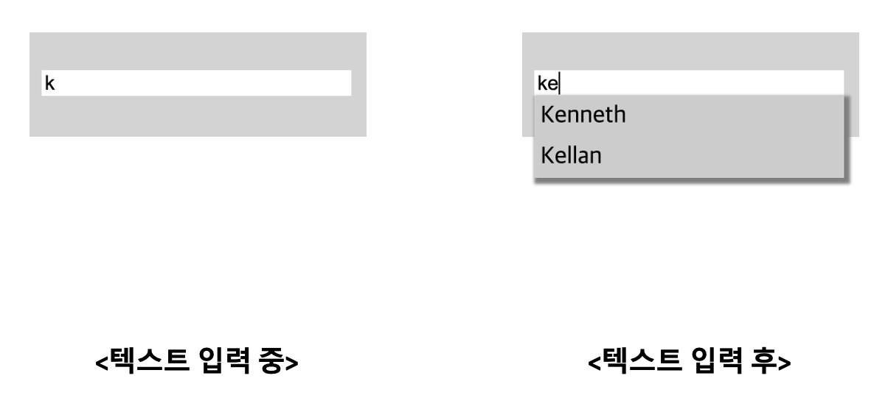

키보드 이벤트를 지연시간(debounce 기능)을 통해 request 횟수를 줄인다.

검색 필드를 벗어나면 출력된 리스트는 사라진다.

Q. 검색어를 입력하는 동시에 DB에 저장되어 있는 유관 검색어를 실시간으로 출력하는 기능을 구현하십시오.
키보드 이벤트를 지연시간(debounce 기능)을 통해 request 횟수를 줄인다.
검색 필드를 벗어나면 출력된 리스트는 사라진다.

npm install
Run npm install
excution
Run npm run dev
q1. 검색결과 리스트를 text input 하단에 출력하시오.
q2. debounce 기능을 구현하시오.
q3. debounce 기능을 통해 request 호출을 최소화 하시오.
q4. 검색 필드 외에 다른 곳을 클릭할 때 출력된 리스트를 보이지 않도록 하시오.